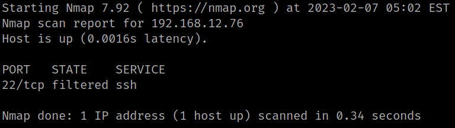
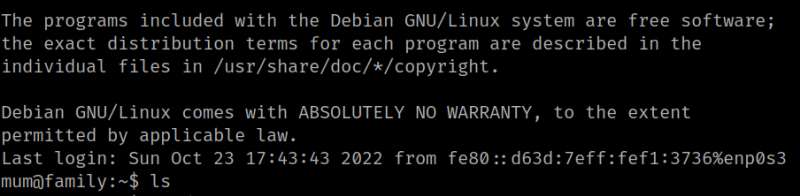

4.3 SSH
If you try to connect via SSH with mum's credentials, you'll find out the 22 port is filtered and you cannot connect.
You can use nmap to check it oot.
$ nmap -p 22 192.168.12.76
Output:

As you already know the IPv6 address and the adapter you can connect via SSH.
1. Run the following comman on your Kali Machine. (Use mum's password)
$ ssh -6 mum@fe80::a00:27ff:fe73:88a3%eth0
Output:
